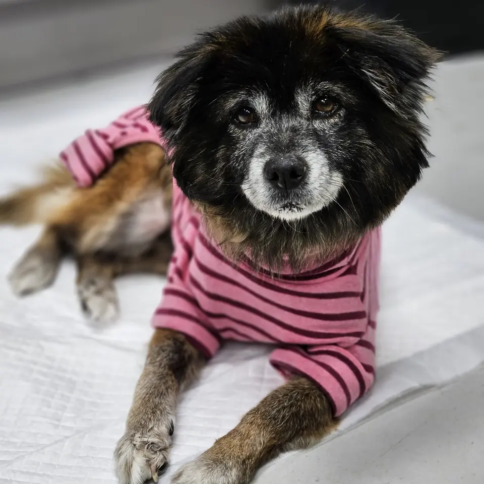
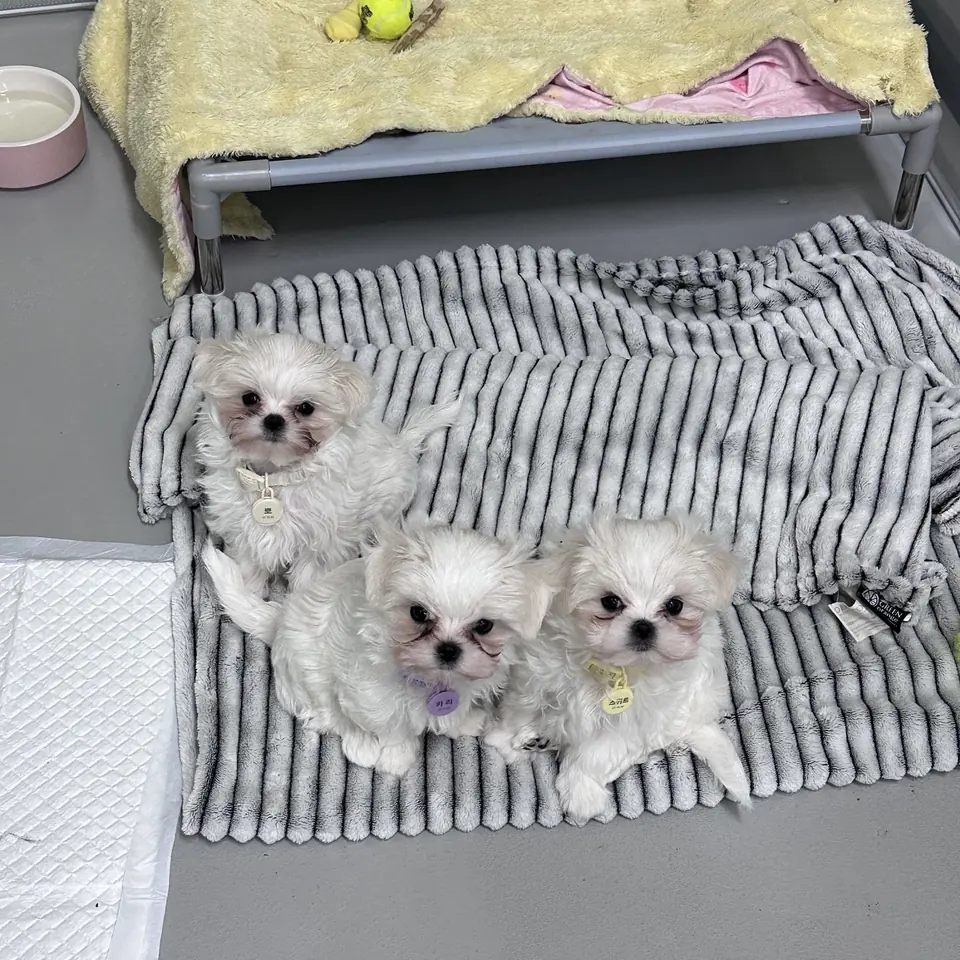
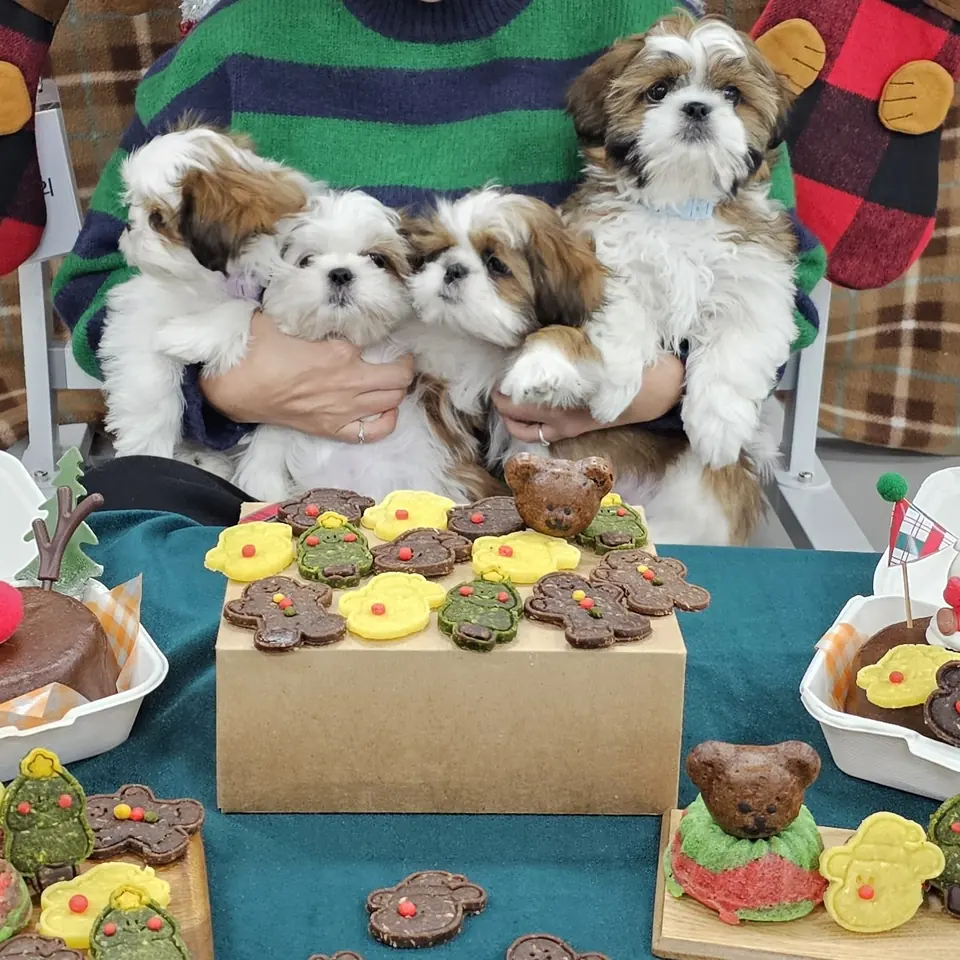
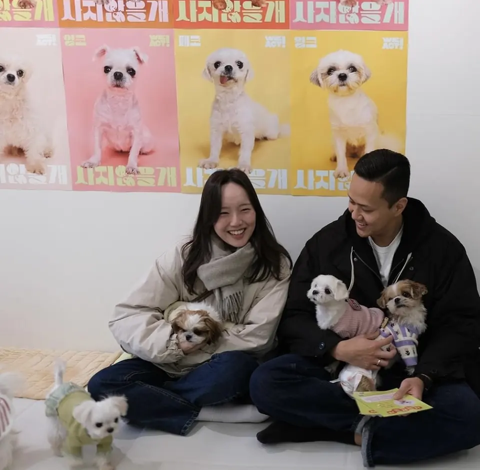
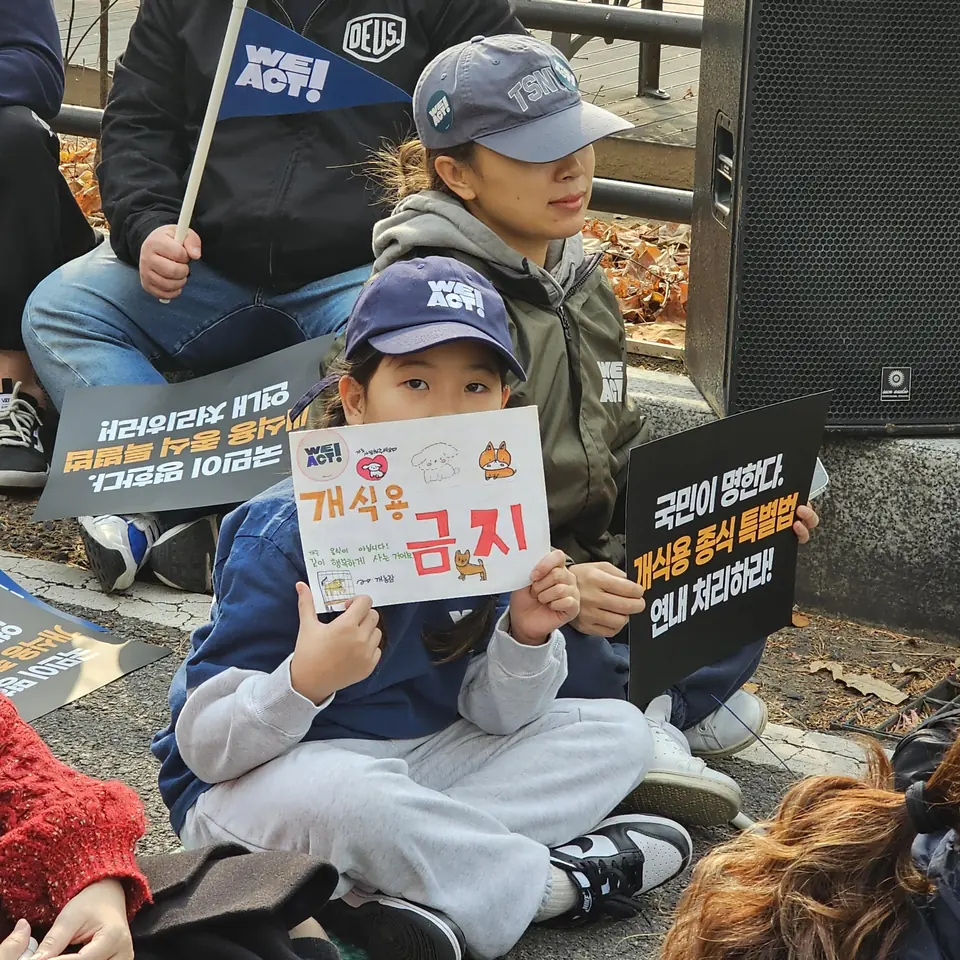
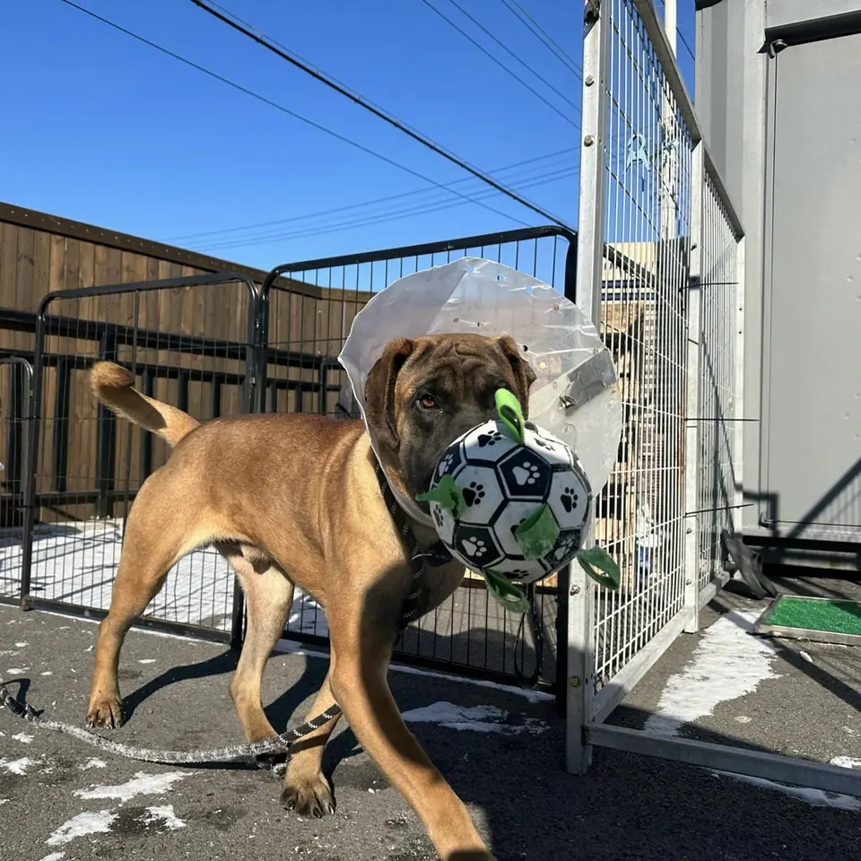
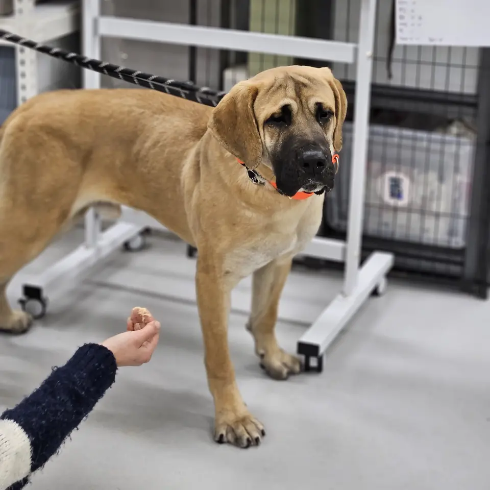
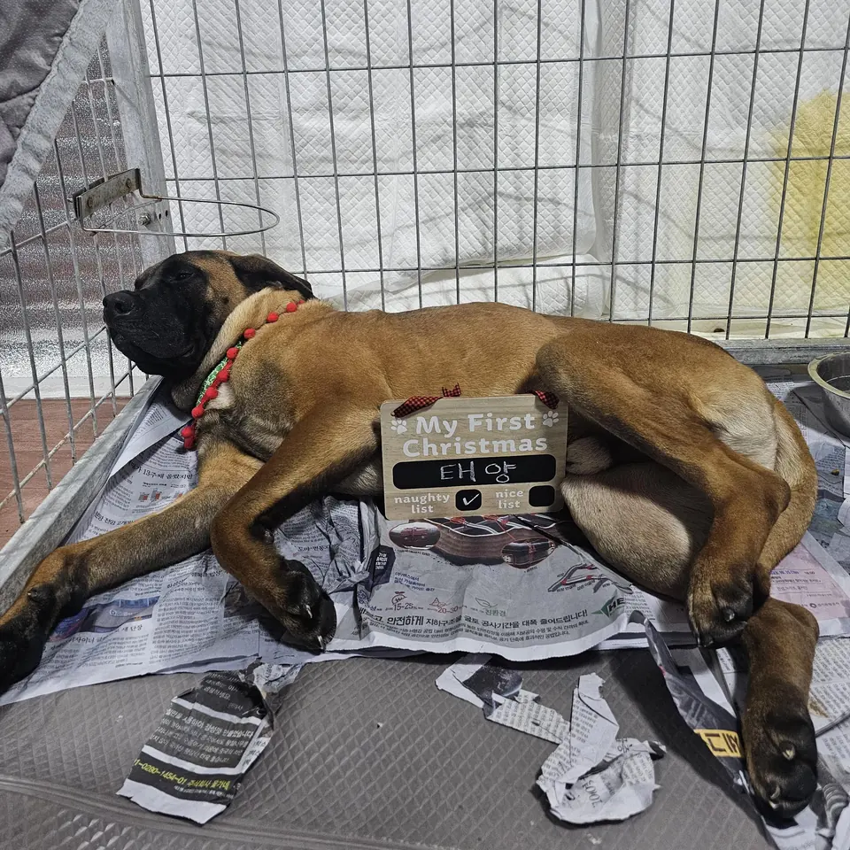
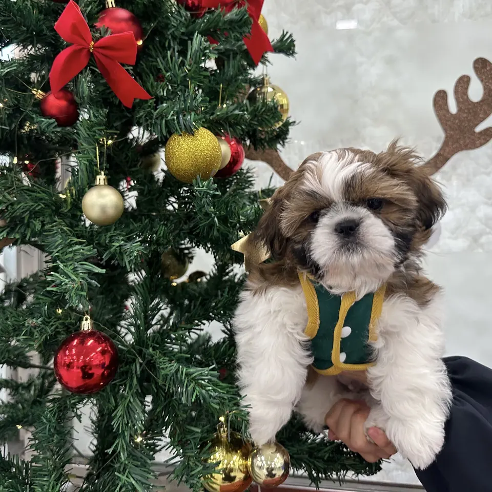
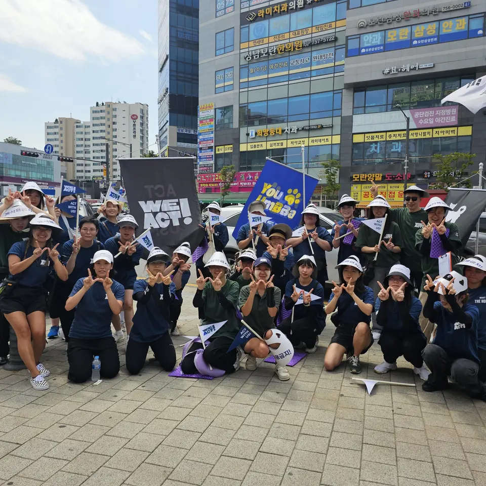

공지사항
2023, THANK YOU FOR ACTING WITH US!


남양주 번식장 구조 현장 인근에 유기 되어 구조된 제나
다사다난했던 한 해가 저물었습니다. 남양주 버려진 번식장에서 시작된 죽은 개와 사라진 개들 구조를 시작으로 꼬리에 꼬리를 물고 적발된 남양주 일대의 번식지옥마을 구조. 끔찍한 번식장의 실태가 세상 밖으로 알려지기 시작했습니다. 뒤이어 모두가 경악을 금치 못했던 화성 허가 번식장에서는 1426마리라는 어마어마한 숫자의 개들이 동물 구조 단체의 연대로 구조되었습니다.

화성 허가 번식장에서 임신한 채 구조된 도아의 자견들 뽀, 카리, 스위트

화성 허가 번식장에서 임신한 채 구조된 브린의 자견들 아보, 카도, 나초, 몰리

'사지않을개' 입양 캠페인 현장
화려한 펫숍 너머에 숨겨진 번식장의 실체가 알려지면서 많은 분들이 펫숍 소비의 진실에 대해 위액트와 함께 목소리를 내주셨습니다. 이런 목소리를 더욱 널리 알리기 위해 지난 11월 위액트는 입양 캠페인 사지않을개를 주최했고 많은 분들의 도움과 함께 성공적으로 캠페인을 마무리 할 수 있었습니다.

개식용 종식 집회에 참여한 위액트 어린이 활동가
2023년 대한민국의 동물학대 이슈는 비단 번식장에서만 일어나고 있지는 않았습니다. 반려인 1500만명의 한국이지만 매년 수 십만 마리의 개들이 ‘고기’로 목숨을 잃고 있는 나라. 시민분들과 동물단체가 함께 목소리를 끊임없이 내주신 덕분에 드디어 개식용 종식 특별법이 국회 본회의까지 통과하게 되었습니다.

육견협회 시위 도구로 이용되었다가 구조된 태양이

육견협회 시위 도구로 이용되었다가 구조된 자유
이런 움직임에 반발하며 ‘육견협회’는 지난 11월 집회를 열어 개들을 좁은 뜰망에 가둔채 길가에 유기했고 다시 한 번 동물 단체들이 연대하여 총 11마리의 개들을 구조했습니다. 그렇게 태양이와 자유도 위액트의 품으로 오게 되었습니다.

더홈에서의 첫번째 크리스마스를 기념하는 장난꾸러기 태양

많은 이모들의 응원으로 입양 공고 사진을 찍어보는 나초
펫숍에 숨겨진 끔찍한 실체와 한국의 개식용 문제로 뜨거웠던 2023년. 그 어느 때보다도 열정적으로 달려올 수 있었던 이유는 바로 여러분들이 있었기 때문입니다. 함께 목소리를 내주셔서, 아이들을 위해 소중한 후원금을 전해주셔서, 포기하고 싶은 순간에도 외면하지 않고 손을 잡아주셔서 여기까지 올 수 있었습니다.

2023년, 함께 ACT 해주셔서 진심으로 감사드립니다.
우리는 계속해서 행동해 나가겠습니다.
2023, THANK YOU FOR ACTING WITH US!